Префектура Гифу · Окухида · где остановиться
KAI Okuhida: горный онсэн, гнутое дерево и ужин у очага в Хираю
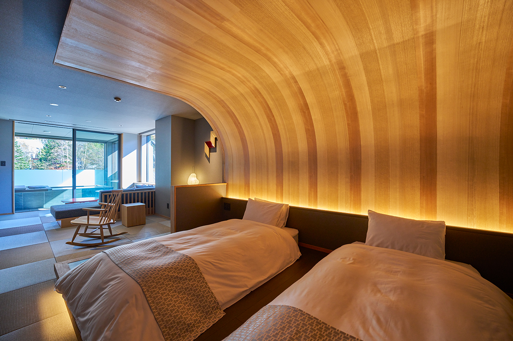
В сентябре 2024 года в онсэнах Окухиды, среди вершин Северных Японских Альп, открылся рёкан KAI Okuhida сети Hoshino Resorts. Здесь живут в окружении столярных ремёсел Хиды и купаются в горячей воде горных источников.
Место
Онсэны среди трёхтысячников
Онсэны Окухиды лежат почти в самом центре Японии, в горах префектуры Гифу. Вокруг стоят вершины выше 3000 метров: Яригатакэ, хребет Хотака, гора Норикура. Окухида объединяет пять курортов и больше сотни источников. По объёму воды, которая сама бьёт из земли, это третье место в стране после Кусацу и Бэппу. Вода здесь горячая: в среднем около 60 °C, а самый горячий источник выходит на поверхность при 98 °C.
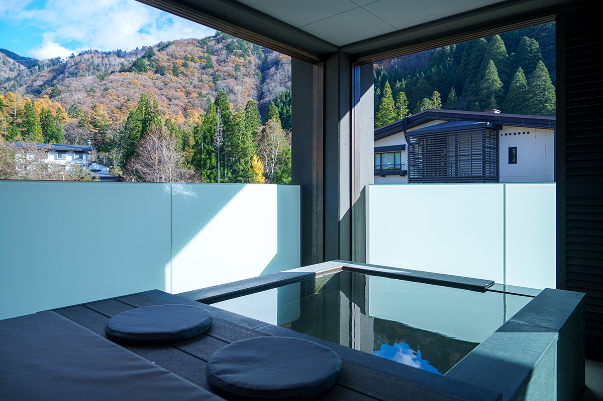
KAI Okuhida стоит у подножия Норикуры, в Хираю. Это самый большой онсэн Окухиды, и у него есть своя легенда. Когда войско Сингэна Такэды вторглось в Хиду, старая белая обезьяна вывела воинов к горячему источнику, и там они смыли с себя усталость похода. Сингэн Такэда (1521–1573) был князем провинции Каи и одним из самых известных полководцев эпохи междоусобных войн.
По ручьям и канавкам посёлка течёт горячая вода, и повсюду слышно её журчание. Рядом долина Камикоти и старый город Такаяма, из Токио ходит прямой автобус, а оттуда удобно ехать и в Киото, и к побережью Японского моря. Поэтому иностранные путешественники охотно останавливаются в Хираю по пути через Японию.
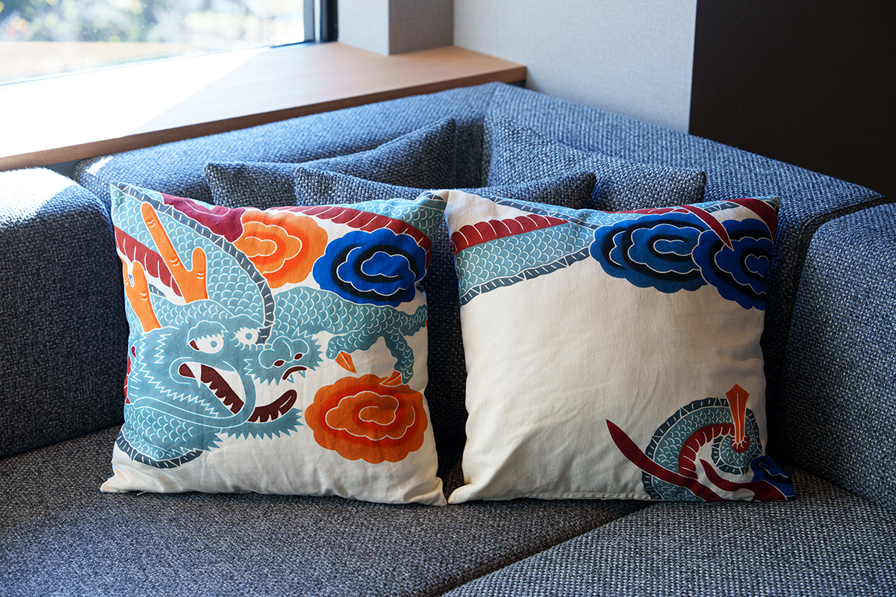
Дизайн
Перекрёстки и дерево Хиды
Когда-то на месте рёкана была общественная баня, и, может быть, поэтому пространство здесь открыто наружу. В центре двор с ножной ванной, вокруг него четыре корпуса: восточный и западный с номерами, корпус с купальнями и отдельный флигель. Связывают их «цудзи», перекрёстки.
В Японии люди исторически собирались не на площадях, а на перекрёстках. Переходя из корпуса в корпус, гость каждый раз оказывается среди горной природы Окухиды, а внутри его ждут стильные интерьеры с ремёслами Хиды. Природа снаружи и рукотворный современный дизайн внутри: этот контраст и делает пребывание приятным.
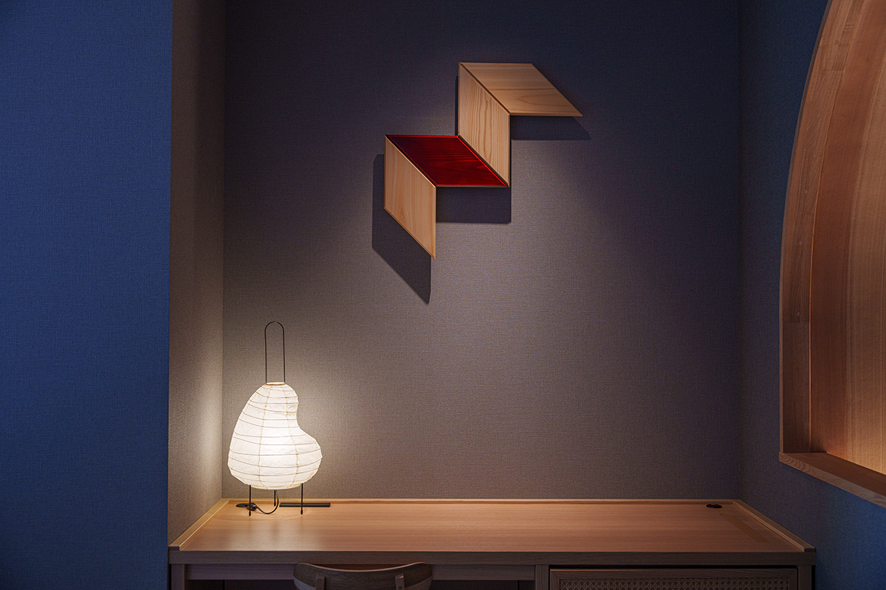
Хида известна и как край столяров. Леса здесь богатые, и мастеров, которые веками оттачивали работу с деревом, называют «хида-но такуми», мастера Хиды. Изначально так называлась повинность периода Нара: вместо налога Хида должна была отправлять в столицу плотников.
Эти мастера строили знаменитые храмы и святилища Нары, а в период Хэйан возводили новую столицу Киото. Вернувшись домой, они приносили с собой столичное мастерство и новую культуру. Всё это перешло в местные дома, мебель и праздничные повозки Такаямы и сохранилось до наших дней.
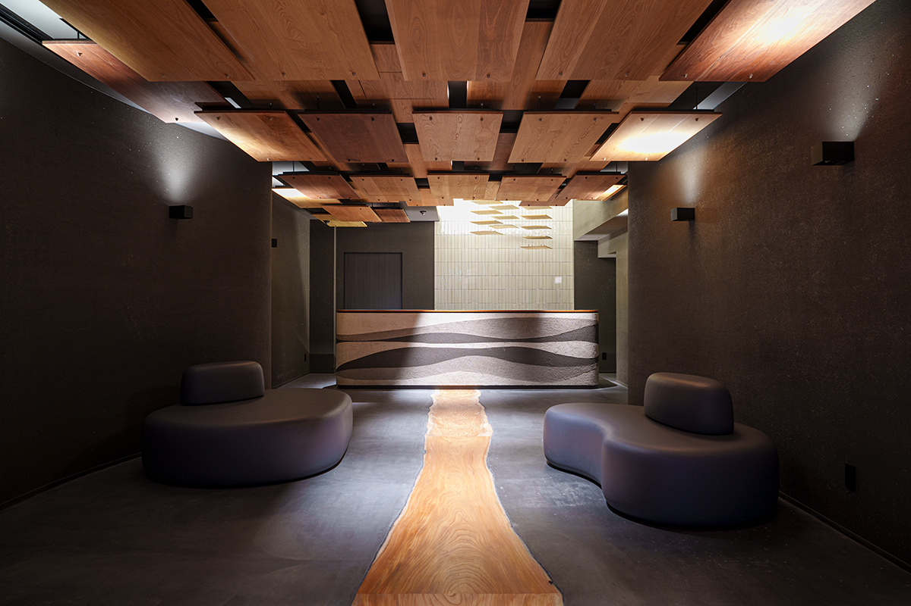
Поэтому столярный дизайн встречает гостя повсюду. Первое, что видишь, войдя в номер, это изголовье, которое повторяет «магэги», гнутое дерево, традиционный приём столяров Хиды. Рядом стоит стул из гнутого дерева.
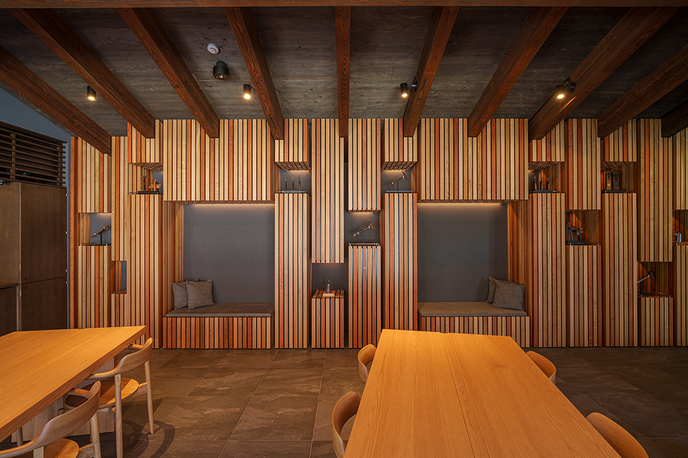
Стена в библиотеке напоминает лес Хиды. А в программе «гототи-гаку», знакомстве с местной культурой, гнуть дерево можно попробовать самому.
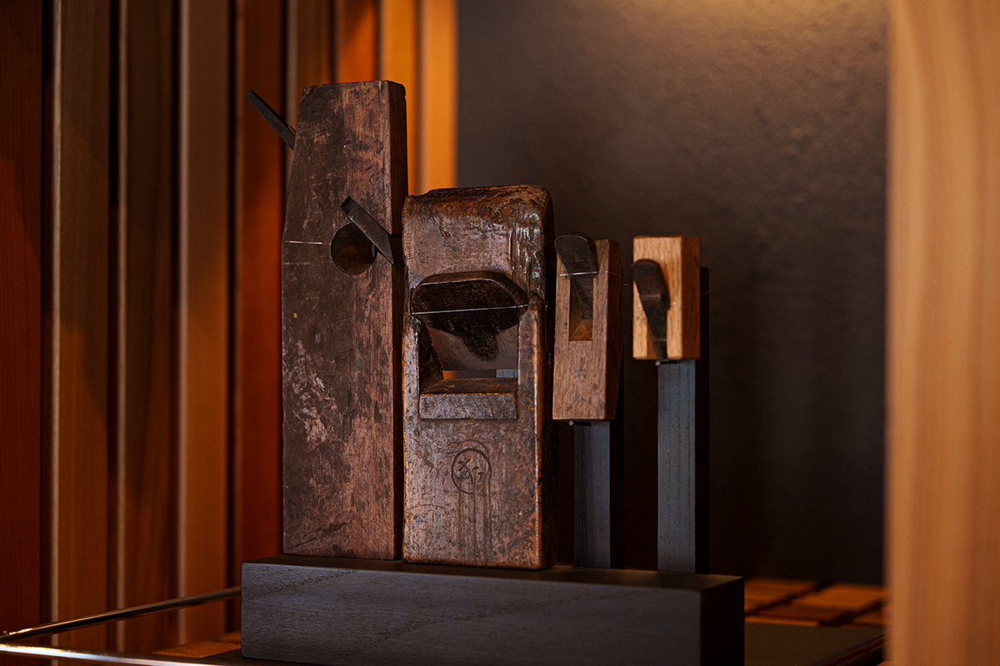
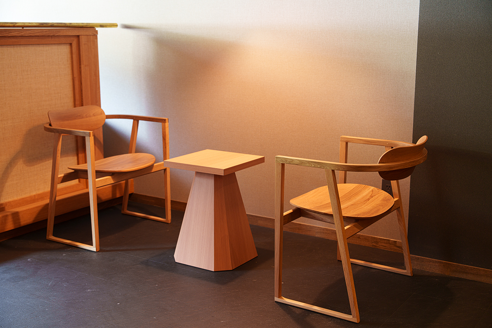
Онсэн
Вода, которая держит тепло
Вода в источнике нейтральная, в ней много метакремниевой кислоты, природного увлажняющего вещества, и метаборной кислоты с сильным антибактериальным действием. Соль в составе прогревает тело до самых костей, и после купания кожа будто покрыта тонкой солевой плёнкой, которая держит влагу.
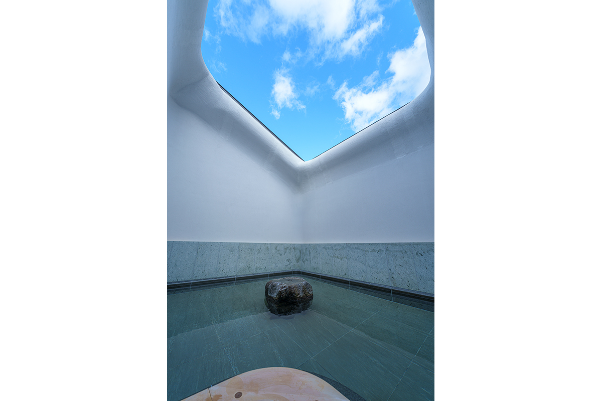
В крытой купальне две ванны, горячая и тёплая, и переходить из одной в другую полезнее, чем сидеть в одной. Открытая купальня похожа на зал для медитации. В Хираю около 40 источников с разным составом воды, поэтому купальни рёкана хорошо подходят, чтобы закончить день после прогулки по общественным баням посёлка.
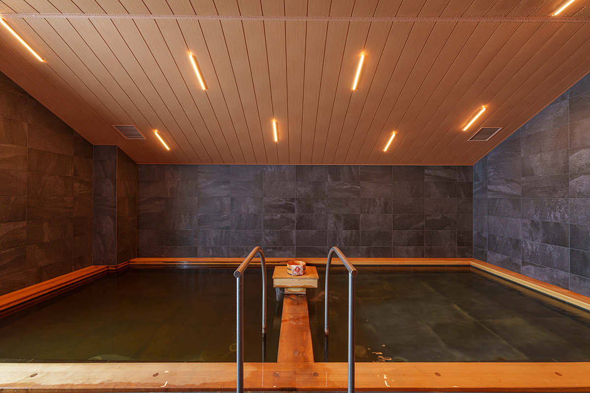
Двор и ножная ванна
В центре рёкана двор, а рядом с ним ножная ванна с проточной водой из источника. Здесь проходят утренняя зарядка и занятия о местных источниках. В Хираю много общих ножных ванн, куда свободно заходят и местные, и приезжие, и даже у соседних ванн вода из разных источников и совсем разная по составу.
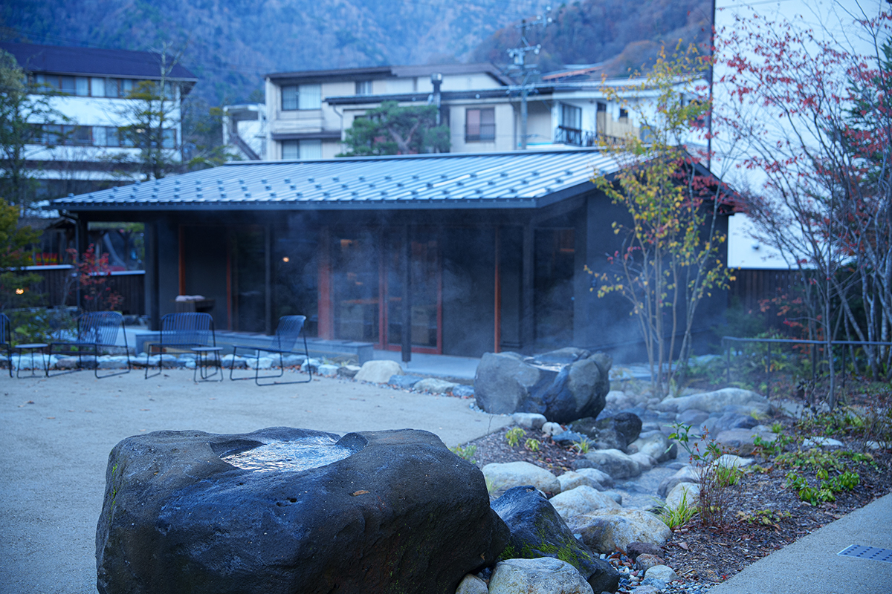
Вечером, сидя в ножной ванне, можно послушать «онсэн ироха», рассказ об источниках Окухиды: почему воды здесь так много и чем особенны онсэны у действующих вулканов. После занятия все идут к источнику рядом со старой сувенирной лавкой. В его горячей воде лежит местная гордость, «хантай тамаго», «наоборот-яйцо»: при 65–70 °C белок остаётся мягким, а желток становится твёрдым.
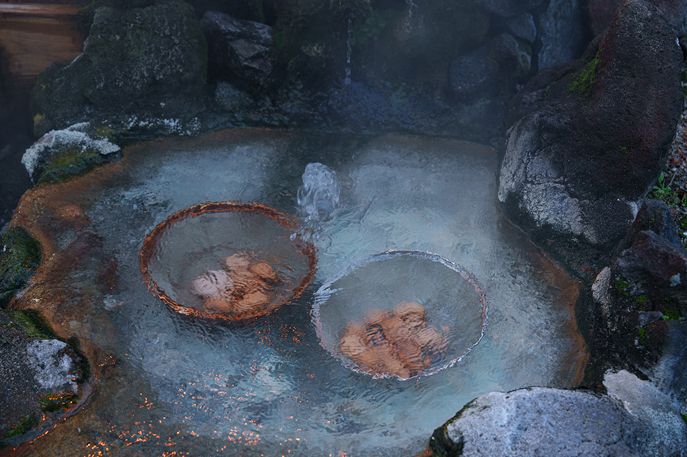
Кухня
Ужин у очага
Местная культура продолжается и за столом. Ужин кайсэки подают в полуотдельных кабинках, и он весь построен на местной еде: говядина Хида, одна из самых известных марок мяса в Японии; мисо на листьях магнолии «хоба», которая во множестве растёт в Хиде; «абура-э», перилла, которой славится Такаяма; «бокка-ни», речная рыба, томлённая в сладком соусе; сушёные овощи и соленья «кири-дзукэ» и «ака-кабура-дзукэ».
Девиз KAI звучит как «классика, но по-новому», и блюда подают неожиданно.
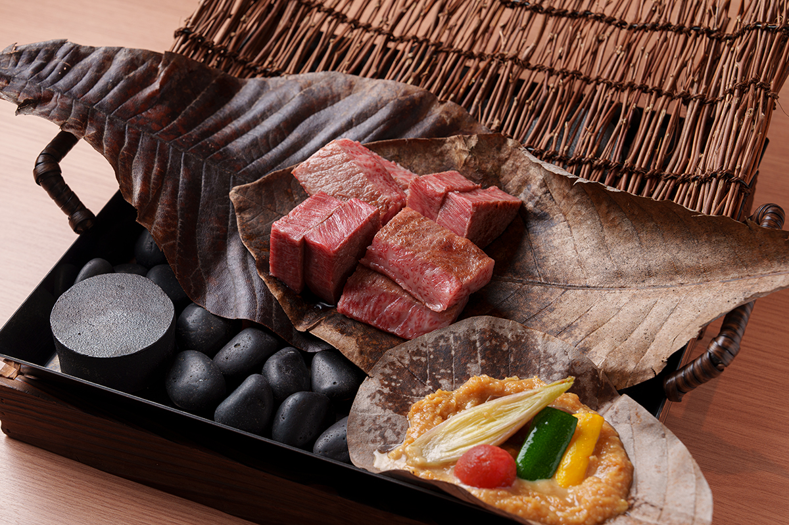
Говядину Хида достают из «цуто», обёртки, сплетённой из тростника, и сами жарят на жаровне до нужной степени. В мисо на листе хоба добавляют «сутатэ», пасту из перетёртой сои, она делает его слаще, а рядом кладут овощи во фритюре. На десерт вместо данго, клёцок в соусе митараси, подают «митараси-маршмеллоу»: поджаренный зефир под сладко-солёным соусом. Сочетание неожиданное и очень удачное.
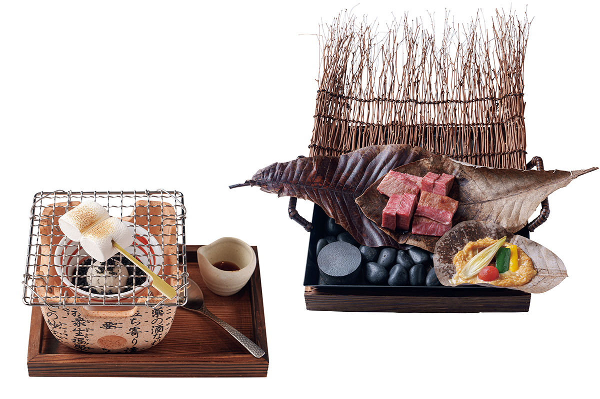
Посуда и сервировка напоминают ужин у очага-ирори. Закуску приносят в деревянном ящике в виде очага вместе с куклой «ямабико», оберегом на удачу и от злых сил.
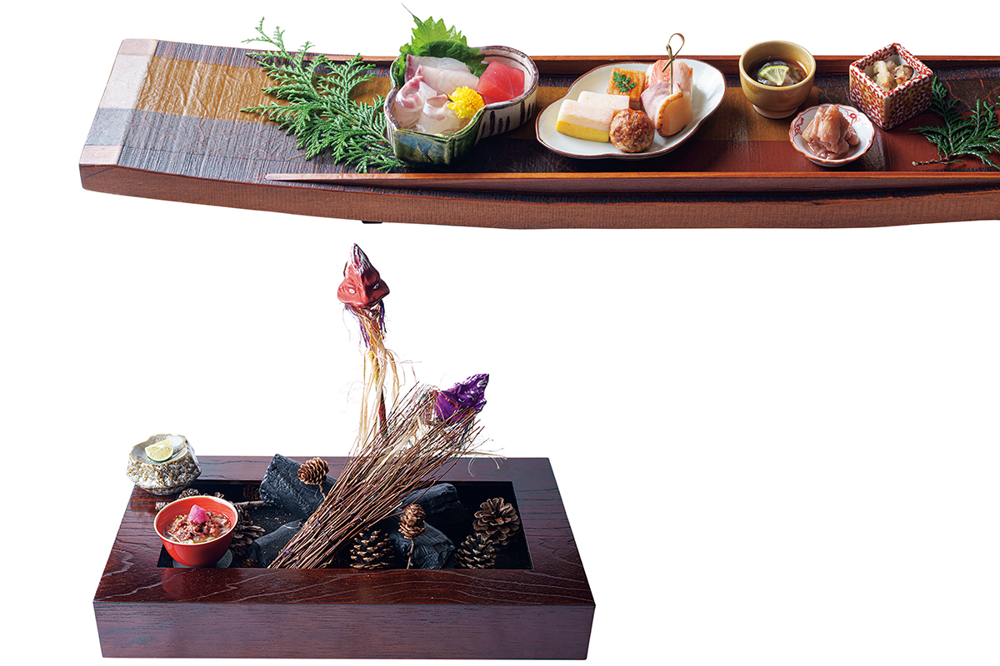
После горячего блюда в чаше подают «хораку-мори», и посуда из старого дерева выглядит как настоящий край очага. Так можно пережить деревенский вечер в снежных горах: дом занесён снегом, все сидят вокруг огня, еду и сакэ ставят прямо у очага и неспешно разговаривают.
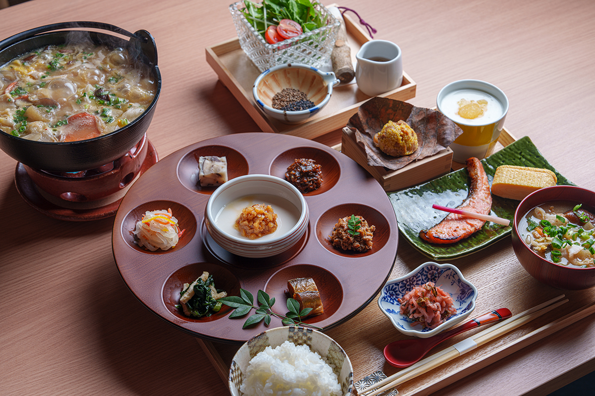
Мастерская
Гнутое дерево своими руками
Одно из удовольствий KAI это «гототи-гаку», знакомство с местной культурой. В Окухиде гостям рассказывают о мастерах Хиды и дают самим согнуть дерево.
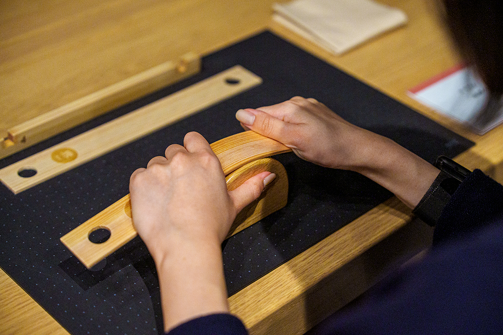
Стулья из гнутого дерева, которое распаривают и сгибают, придумал немецкий мебельщик около 180 лет назад. В Японии такой стул в 1920 году впервые сделала мебельная компания из Хиды, Hida Sangyo. Для него она пустила в дело бук, который до этого считался бесполезной древесиной.
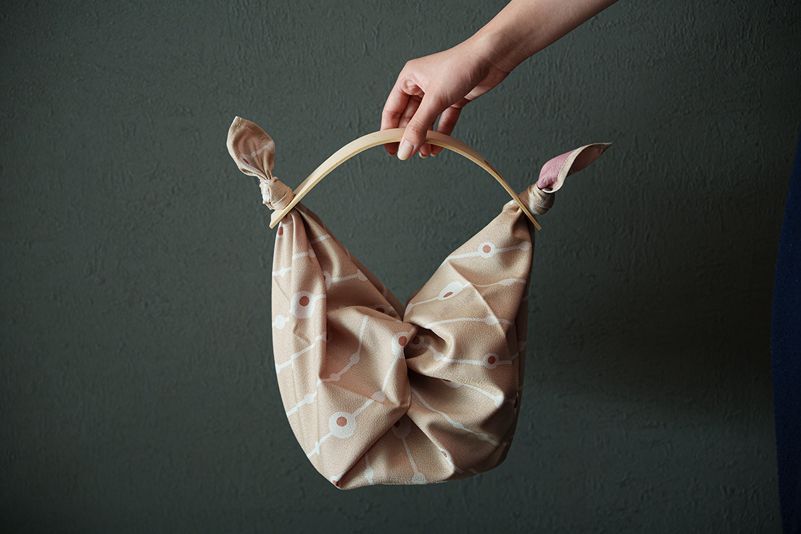
Когда пробуешь сам, удивляешься, как сильно гнётся дерево, если дать ему тепло и влагу. Почти все стулья в рёкане сделаны этим способом, и после мастер-класса начинаешь особенно ценить умение, унаследованное от мастеров Хиды.
Стойку в главном корпусе гость впервые видит только при отъезде: регистрация проходит прямо в номере. Рядом с ней магазин с ремёслами и угощениями местных мастеров, здесь удобно выбрать подарки из Хиды.
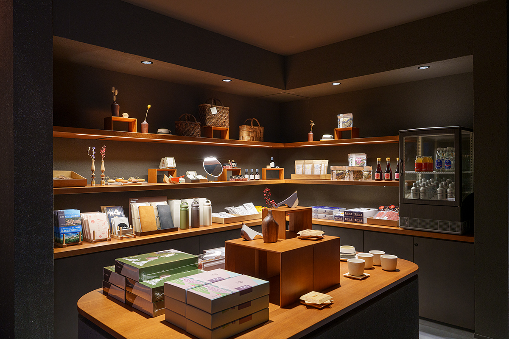
KAI Okuhida
- Адрес
- префектура Гифу, Такаяма, Окухида-онсэнго, Хираю, 138
- Телефон
- +81 50-3134-8092 (центр бронирования KAI)
- Номера
- 49
- Заезд / выезд
- 15:00 / 12:00
- Цены / Вход
- ночь с ужином и завтраком от 31 000 иен с налогом и обслуживанием
- Как добраться
- на машине около 5 минут от развязки Хираю скоростной дороги Тюбу-Дзюкан; от станции JR Такаяма около 45 минут на машине; от автовокзала Хираю около 3 минут пешком
Фото: Ацуси Ямахира.